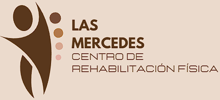

Las Mercedes - Centro de Rehabilitación Física
Inicio
Misión, Visión y Valores
Contacto
Nuestros Servicios
Rehabilitación Física
Terapia Manual
Ejercicios Terapéuticos
Tratamiento de Lesiones Deportivas
Quiropraxia
Prevención de Lesiones
Magnetoterapia